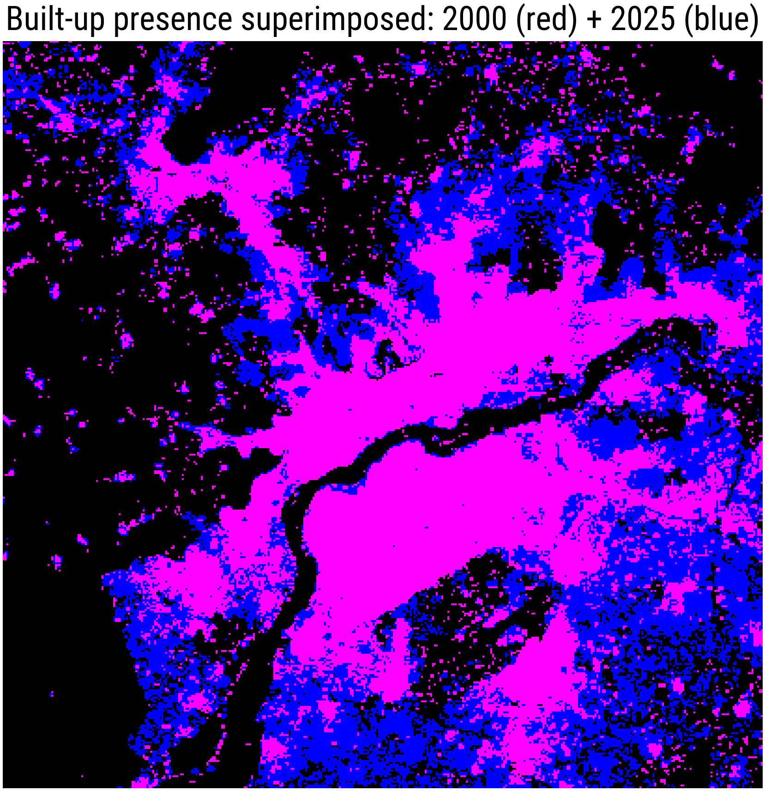

flowchart LR
%% Define the nodes with simplified text
A["**1. Data Acquisition**<br/>Landsat & Sentinel"]
B["**2. Pre-processing**<br/>Filtering & Mosaicking"]
C["**3. Classification**<br/>Random Forest ML"]
D["**4. Analysis**<br/>Urban Growth Stats"]
%% Simple linear connections
A --> B --> C --> D
%% Clean, professional styling
style A fill:#E8F5E9,stroke:#2E7D32,stroke-width:2px
style B fill:#FFFDE7,stroke:#FBC02D,stroke-width:2px
style C fill:#E3F2FD,stroke:#1976D2,stroke-width:2px
style D fill:#FFEBEE,stroke:#C62828,stroke-width:2px
%% Global font settings for the diagram
linkStyle default stroke:#666,stroke-width:2px;
Introduction
This practical aims to showcase a fairly typical Earth Observation workflow: use the spaceborne acquired data to delineate or map different areas of interest. The actual application is to map the growth of cities (so to map “built-up” or “non-built-up” areas) over time.
Background
Where cities expand (and where they don’t) affects the everyday life of their citizens: water, sanitation, access to education, jobs, exposure to adverse meteorological conditions, … In West Africa, most of this urban growth happens on the fringes, and is largely informal. This means that there is little information to e.g., provide required services once an area has been settled.
Climate shocks can nudge these patterns. In many parts of West Africa, drought years hit rain-fed agriculture hard. When rural incomes fall, some people move, sometimes temporarily, sometimes permanently, toward larger cities with potentially better labour/livelihood opportunities. That movement can leave a spatial fingerprint: new, fast-growing neighbourhoods at the edge of the city, often on cheap or marginal land. In recent years, civil strife has also produced a large number of displaced people, compounding the drivers of the influx. Limited resources in this region often mean that information is woefully inadequate for policy makers to act on. Fast and informal growth can also increase risk of flooding (as settlements occur in floodplains, wetlands, or block drainage corridors). Dwellers can also become urban heat hotspots, in addition to issues carried out by lack of sanitation and clean drinking water.
In the practical you will: (1) build annual Landsat composites, (2) classify land cover into urban, forest, vegetated, bare soil, and water using a Random Forest model, (3) create an urban-area time series, and (4) infer what’s going on. By the end, you’ll have a reproducible workflow and a set of figures that tell a clear story about how a West African city has changed. While you’ll be focussing on a particular city, the potential is there for running this analyses over larger and larger areas, and using this evidence to test for, e.g., quantising the “why” and the “how” of these migrations.
Brief description of the activity
In this activity, we’ll use data from the Landsat archive. The Landsat family of sensors is the longest continuous data record of EO data (since the early 1970s until now). The Landsat archive provides an incredible record of the changes and evolution of the land surface for the last half century. Using this data is not without challenges though: in order to cover such a large time span, different satellites carrying slightly different versions of the imaging sensor have been used, introducing discrepancies.
Landsat is an optical sensor, and as such, cannot collect data at night, under clouds or under cloud shadows. In areas with persistent cloud cover, the 16-day revisit period for Landsat can result in a depressing meagre number of actual observations! Additionally, for surface applications, the effect of the atmosphere needs to be taking into account. A lot of effort has gone in homogenising and making the actual data as easy and useful to end users, via a process of “calibration and validation”, and producing derived products that employ sophisticated algorithms to map clouds, correct for sensor differences, etc. While these advanced products are invaluable, it is hard to come up with a degree of quality that satisfies all users, so a degree of additional preprocessing is often a crucial step.
In terms of urban growth, you will be looking at a time series data (e.g., from 2000 up to 2025, considering every fifth year), and looking to build a classifier that maps the data recorded by the sensor on each pixel to a fixed set of labels (e.g., “urban”, “water”, “vegetation”, etc.). The classifier needs to be defined, and this is done by gathering a so-called training-validation-testing dataset: you will need to select a large set of pixels and label them using the required class labels. Part of this dataset is used to then “train” the classifier, and part of it should be used to assess the quality of the classification and its uncertainty. Once the classifier is trained and validated, you can produce maps of different classes, and use them to quantify the urban growth.
Data and methods
Google Earth Engine (GEE)
Even though the Landsat archive is free of charge and there are many ways of accessing it and using the data, here we will use Google Earth Engine.
ImportantGetting a GEE account
You will need a Google (or a “gmail”) account and then you can signup for GEE here. Follow the instructions therein
Note that this process can take a few days to complete!!
GEE is a cloud based solution, in which most of the heavy processing is done in Google’s servers. The processing is defined using a high level computing language (we’ll use javascript via the browser here, but Python is another possibility). Generally speaking, we will do most of the processing on GEE via the browser, but will export results (as e.g., raster files) that can then be further explored in other software tools. Figure 1 shows a labelled screenshot of GEE’s main editor window.

Annual composite creation method
Satellite data
We use Landsat surface reflectance data provided through Google Earth Engine. Landsat offers a unique, continuous global record of Earth observations from the 1980s to the present, making it particularly suitable for long-term urban studies. To ensure consistency across time, we combine data from multiple Landsat sensors:
- Landsat 5 TM (for earlier years)
- Landsat 7 ETM+
- Landsat 8 OLI
- Landsat 9 OLI-2
All datasets are taken from the Collection 2, Tier 1, Level-2 Surface Reflectance products. These data have already been radiometrically calibrated and atmospherically corrected, allowing surface reflectance values to be compared across sensors and years.
Temporal selection
The analysis will be performed for the following years: 2000, 2005, 2010, 2015, 2020, and 2024 These snapshots provide a simple but effective way to visualise long-term urban expansion.
Cloud masking and quality control
Satellite images are affected by clouds, cloud shadows, and other artefacts that can obscure the surface. To address this, we apply a quality mask based on the Landsat QA_PIXEL band. Pixels flagged as any of the following are removed:
- Fill (missing data)
- Dilated cloud
- Cirrus cloud
- Cloud
- Cloud shadow
In addition, scenes are filtered using metadata to retain only images with less than 70% reported cloud cover. To keep processing efficient, no more than 25 images per year are used, prioritising the clearest scenes.
Band harmonisation and scaling
Different Landsat sensors store spectral bands using different band numbers. To allow images from different missions to be combined:
Spectral bands are renamed to a common set of names (blue, green, red, nir, swir1, swir2). Table 1 shows what these bands represent.
| Band name | Spectral region | Approx. wavelength (nm) | What it is commonly used for |
|---|---|---|---|
| blue | Blue | 450–510 | Water, haze, urban features |
| green | Green | 520–600 | Vegetation reflectance, urban areas |
| red | Red | 630–690 | Vegetation vs built-up contrast |
| nir | Near-infrared (NIR) | 760–900 | Vegetation health, biomass |
| swir1 | Shortwave IR (SWIR) | 1550–1750 | Built-up areas, soil, moisture |
| swir2 | Shortwave IR (SWIR) | 2080–2350 | Urban materials, dryness, fire scars |
Tip
This harmonisation step ensures that reflectance values are directly comparable across sensors and years.
Surface reflectance values are rescaled using the official Landsat Collection 2 scaling factors
Additional spectral features (“indices”)

Some simple manipulations of reflectance are useful to differentiate different land cover classes. For example, the large reflectance contrast between the nir and red bands in healthy vegetation (see Figure 3) can be used to detect its prevalence. Similar empirical relationships have been investigated for other scene types, such as urban areas or water. In Table 2 there’s brief summary of these
| Index | Full name | Formula (Landsat bands) | What it highlights | Notes |
|---|---|---|---|---|
| NDBI | Normalised Difference Built-up Index | (swir1 − nir) / (swir1 + nir) | Built-up / impervious surfaces | Simple, widely used; can confuse bare soil |
| UI | Urban Index | (swir2 − nir) / (swir2 + nir) | Dense urban areas | Strong urban contrast; more noise-sensitive |
| IBI | Index-based Built-up Index | (NDBI − (NDVI + MNDWI)) / (NDBI + (NDVI + MNDWI)) | Built-up areas with vegetation and water suppressed | More complex but very effective |
| EBBI | Enhanced Built-up and Bareness Index | (swir1 − nir) / (10 × √(swir1 + TIR)) | Built-up vs bare soil | Requires thermal band; advanced |
| NDVI | Normalised Difference Vegetation Index | (nir − red) / (nir + red) | Vegetation | Often used as a vegetation mask, not an urban index |
| MNDWI | Modified Normalised Difference Water Index | (green − swir1) / (green + swir1) | Water bodies | Used within IBI to suppress water |
Annual image composites
For each year, all selected and processed images are combined into a single annual composite using the median value of each pixel. Using the median:
- Reduces the influence of residual clouds or outliers
- Produces a more stable and representative image of surface conditions
- Is well suited for urban studies where abrupt extremes are not desired
Each annual composite is clipped to the AOI and assigned a timestamp corresponding to the study year.
Visualisation
For exploratory analysis, annual composites are displayed as true-colour (RGB) images using the red, green, and blue bands. A consistent reflectance stretch is applied across all years to ensure that visual differences primarily reflect real land surface change rather than display settings.
Summary
In this first stage of the practical, we:
1 .Define an urban area of interest 2. Select multi-decadal Landsat surface reflectance data 3. Apply cloud masking and quality filtering 4. Harmonise spectral bands across sensors 5. Create annual composites with different feature sets
These annual mosaics form the foundation for later steps in the practical, where we will quantify and interpret urban growth patterns.
Supervised classification and class definition
To map urban expansion, we use a supervised classification approach. In supervised classification, the algorithm “learns” how different land cover types appear in satellite data based on training samples provided by the user. In this practical, you can define three or four land cover classes (e.g., built-up areas, vegetation, bare soil, and water. Although all classes are included to improve discrimination, the primary focus of the analysis is on identifying built-up (urban) areas accurately.
Tip
Having additional classes can be useful if there are some uninteresting” classes are very distinct (e.g. water or vegetation) that can confuse the algorithm.
Training data are provided as a labelled feature collection, where each feature represents a location with a known land cover class. These training labels are typically created by manually digitising polygons or points using high-resolution imagery as reference. Each training feature contains a class identifier (e.g. an integer code) that links the sample to one of the four land cover types. Spectral values and indices (e.g. NDBI, NDVI) are extracted from the Landsat composites at these locations and used as input to the classifier.
We use a Random Forest (RF) classifier, which is an ensemble machine-learning method based on many decision trees. RF is well suited to remote sensing applications because it handles non-linear relationships, is relatively robust to noise, and performs well with a limited number of training samples. The labelled data are split into training and testing subsets, typically using a random partition (for example, 70% for training and 30% for testing). The training subset is used to build the model, while the testing subset provides an independent estimate of classification accuracy.
Model performance can be roughly validated using a confusion matrix and overall accuracy derived from the testing data. Additional qualitative validation is encouraged by visually comparing the classified map with true-colour imagery and checking whether built-up areas correspond to known urban features such as dense neighbourhoods and road networks. This combination of quantitative and visual checks will helpyou assess the suitability of your results and whether they are fit for purpose.
Creating an annual composite in GEE
This is the actual code that performs this. Most of the code is standard boilerplate, so it’s fundamentally a “cut and paste” job, but you should change options and see the results! While all these different snippets are given individually, you should copy them in sequence in the code editor.
I will use using Bamako for this example, but you’ll have to change this to other cities!
Setting up some variables
It’s a good idea to define options and variables once, and keep referring to them. If you want to change things later on, you can do this in a managed way.
/**************************************************************
* SETTINGS (you can edit these)
**************************************************************/
// City and AOI (example: Bamako)
var cityName = 'Bamako';
var cityPoint = ee.Geometry.Point([-8.0029, 12.6392]);
// AOI size: buffer radius in metres
var aoiRadiusMeters = 20000;
// Target years for the practical
var targetYears = [2000, 2005, 2010, 2015, 2020, 2024];
// Choose an annual period to calculate the mosaic
var seasonStartMonth = 1; // January
var seasonEndMonth = 4; // April (end is handled as May 1 below)
// Scene filtering knobs (speed + robustness)
var maxCloudCoverPercent = 70; // pre-filter scenes by metadata cloud cover
var maxScenesPerYear = 25; // keep only the clearest N scenes (big speed win)
// Visualisation stretch for reflectance RGB/false colour (scaled reflectance ~0–1)
var rgbVis = {min: 0.0, max: 0.30};Map setup
We will also select our region (simply my creating a circular buffer around the centre lat/lon of Bamako)
/**************************************************************
* MAP SETUP (AOI, quick sanity check)
**************************************************************/
var aoi = cityPoint.buffer(aoiRadiusMeters); // simple circular AOI (robust geometry)
Map.centerObject(aoi, 12); // 12 is the initial zoom level
Map.addLayer(aoi, {color: 'yellow'}, cityName + ' AOI');
// AOI area sanity check (needs a small maxError)
print('AOI area (km^2):', aoi.area(1).divide(1e6));Selecting Landsat data
The following snippet selects the different Landsat collections (we need different sensors to cover our large temporal period). The Landsat L2 collection has a per pixel field callec QA_PIXEL that encodes whether a cloud or shadow has been detected. It also uses a dilated mask to try to mask cloud shadows. We then need to scale the data to units of reflectance (a number between 0 and 1), and additionally, we remove (mask) any pixels where the reflectance is outside this range (can happen due to to processing issues), or whether any of the bands are missing.
/**************************************************************
* LOAD RAW LANDSAT COLLECTIONS (Collection 2, Level-2)
*
* We keep these “raw” collections separate from preprocessing.
* Important idea: filter on metadata first, then map() preprocessing.
**************************************************************/
var landsat5_raw = ee.ImageCollection('LANDSAT/LT05/C02/T1_L2'); // Landsat 5 TM
var landsat7_raw = ee.ImageCollection('LANDSAT/LE07/C02/T1_L2'); // Landsat 7 ETM+
var landsat8_raw = ee.ImageCollection('LANDSAT/LC08/C02/T1_L2'); // Landsat 8 OLI
var landsat9_raw = ee.ImageCollection('LANDSAT/LC09/C02/T1_L2'); // Landsat 9 OLI-2
/**************************************************************
* CLOUD/SHADOW MASKING (using QA_PIXEL)
*
* We use QA_PIXEL bits to remove:
* - Fill
* - Dilated cloud
* - Cirrus
* - Cloud
* - Cloud shadow
*
* This is deliberately “simple but decent” for a taster practical.
**************************************************************/
function qaCloudShadowMask_C2L2(image) {
var qa = image.select('QA_PIXEL');
// Build a single-band boolean mask:
// 1 means “keep”, 0 means “mask out”
var mask = qa.bitwiseAnd(1 << 0).eq(0) // not fill
.and(qa.bitwiseAnd(1 << 1).eq(0)) // not dilated cloud
.and(qa.bitwiseAnd(1 << 2).eq(0)) // not cirrus
.and(qa.bitwiseAnd(1 << 3).eq(0)) // not cloud
.and(qa.bitwiseAnd(1 << 4).eq(0)); // not cloud shadow
return mask;
}
/**************************************************************
* REFLECTANCE SCALING + "FEATURE HYGIENE"
*
* Landsat C2 L2 SR scaling:
* SR = DN * 0.0000275 + (-0.2)
*
*
* - Clamp reflectance to [0, 1] to avoid odd outliers.
* - Mask pixels where any band is missing (edges, artefacts).
**************************************************************/
function scaleAndCleanReflectance(srImage) {
// Apply the scaling
var scaled = srImage.multiply(0.0000275).add(-0.2);
// Clamp to a sensible range
scaled = scaled.clamp(0, 1);
// Mask out pixels where any band is missing/invalid
// (reduce(min) checks for missing values across bands)
var allBandsPresent = scaled.reduce(ee.Reducer.min()).gte(0);
return scaled.updateMask(allBandsPresent);
}Harmonise sensors
The different Landsat sensors have different band names. Here, we relabel them to a common set of names. We use the previous code snippets to apply the cloud mask, reflectance scaling and additional cleaning up to the data.
/**************************************************************
* SENSOR HARMONISATION (common band names)
*
* Landsat 5/7 SR bands: SR_B1..SR_B5, SR_B7 (Band 6 is thermal ST_B6)
* Landsat 8/9 SR bands: SR_B2..SR_B7 (Band 1 is coastal; we ignore it)
*
* We rename to a common 6-band set:
* blue, green, red, nir, swir1, swir2
**************************************************************/
function prepLandsat57(image) {
var mask = qaCloudShadowMask_C2L2(image);
var sr = image.select(
['SR_B1','SR_B2','SR_B3','SR_B4','SR_B5','SR_B7'],
['blue','green','red','nir','swir1','swir2']
);
var cleaned = scaleAndCleanReflectance(sr)
.updateMask(mask)
.copyProperties(image, image.propertyNames());
return cleaned;
}
function prepLandsat89(image) {
var mask = qaCloudShadowMask_C2L2(image);
var sr = image.select(
['SR_B2','SR_B3','SR_B4','SR_B5','SR_B6','SR_B7'],
['blue','green','red','nir','swir1','swir2']
);
var cleaned = scaleAndCleanReflectance(sr)
.updateMask(mask)
.copyProperties(image, image.propertyNames());
return cleaned;
}Add indices
In many applications, spectral band combinations can be useful to enhance the signal and facilitate classification. They’re also quite useful to visually interpret images qualitatively, so we’ll add a bunch of them here.
/**************************************************************
* ADD INDICES (extra feature bands for classification)
*
* Indices included:
* - NDVI (vegetation)
* - MNDWI (water)
* - NDBI (built-up proxy)
* - UI (simple urban index): UI = NDBI - NDVI (easy to explain)
* - IBI (index-based built-up index): contrasts built-up vs veg+water
* - BRIGHT (optional): mean reflectance as a simple brightness feature
*
* Note: There are multiple definitions in the literature;
**************************************************************/
function safeDivide(numerator, denominator) {
// Avoid divide-by-zero (if den == 0, set it to 1)
denominator = denominator.where(denominator.eq(0), 1);
return numerator.divide(denominator);
}
function addFeatureIndices(img) {
// These assume our common bands exist: red, green, nir, swir1
var ndvi = img.normalizedDifference(['nir', 'red']).rename('NDVI');
var mndwi = img.normalizedDifference(['green', 'swir1']).rename('MNDWI');
var ndbi = img.normalizedDifference(['swir1', 'nir']).rename('NDBI');
// Simple urban index (teachable): built-up proxy minus vegetation
var ui = ndbi.subtract(ndvi).rename('UI');
// IBI (common formulation)
var avgVegWater = ndvi.add(mndwi).divide(2);
var ibi = safeDivide(ndbi.subtract(avgVegWater), ndbi.add(avgVegWater)).rename('IBI');
// Brightness: average reflectance (very intuitive for students)
var bright = img.select(['blue','green','red','nir','swir1','swir2'])
.reduce(ee.Reducer.mean())
.rename('BRIGHT');
return img.addBands([ndvi, mndwi, ndbi, ui, ibi, bright]);
}Build a per year image collection
Now, all the stuff we defined above will start to get used. We need to build a stack of cleaned images per year that cover our region of interest, are masked for clouds etc. For years before 2013, we’ll use Landsat 5 and 7, for years afterwards, we’ll use Landsat 8 and 9. Note that we’re using the variables defined at the top to control things like maximum cloud coverage etc.
/**************************************************************
* BUILD A PER-YEAR IMAGE COLLECTION (filter first, then map)
*
* Steps:
* - Choose a sensor group depending on year (<=2012 uses L5+L7; >=2013 uses L8+L9)
* - Filter by AOI and dry-season date window
* - Filter by CLOUD_COVER metadata, sort clearest-first, keep top N scenes
* - Map preprocessing (mask + scale + rename bands)
**************************************************************/
function getSeasonDateRange(year) {
year = ee.Number(year);
var start = ee.Date.fromYMD(year, seasonStartMonth, 1);
// endMonth is inclusive-ish: we use the first day of the next month as end
var end = ee.Date.fromYMD(year, seasonEndMonth + 1, 1);
return {start: start, end: end};
}
function collectionForYear(year) {
year = ee.Number(year);
var range = getSeasonDateRange(year);
// Choose sensors based on era
var rawCollection = ee.ImageCollection(
ee.Algorithms.If(
year.lte(2012),
landsat5_raw.merge(landsat7_raw), // 2000–2012 era
landsat8_raw.merge(landsat9_raw) // 2013+ era
)
);
// Filter on raw metadata BEFORE preprocessing
var filtered = rawCollection
.filterBounds(aoi)
.filterDate(range.start, range.end)
.filterMetadata('CLOUD_COVER', 'less_than', maxCloudCoverPercent)
.sort('CLOUD_COVER')
.limit(maxScenesPerYear);
// Now map preprocessing and band harmonisation
var prepped = ee.ImageCollection(
ee.Algorithms.If(
year.lte(2012),
filtered.map(prepLandsat57),
filtered.map(prepLandsat89)
)
);
return prepped;
}The annual composite!
You thought we’d never get here! The next bit defines how the composite gets done (using the median), adds the relevant indices and applies it to all the years.
/**************************************************************
* ANNUAL COMPOSITE (median) + indices
*
* The “annual mosaic” is the median of all (masked) images in the season.
* Then we add indices so the final image is ready for classification.
**************************************************************/
function annualComposite(year) {
year = ee.Number(year);
var col = collectionForYear(year);
// Diagnostics: useful for teaching and debugging
print('Year', year, 'images used:', col.size());
// Build the composite and add feature indices
var composite = addFeatureIndices(col.median())
.clip(aoi)
.set('year', year)
// time_start used later if we chart time series
.set('system:time_start', ee.Date.fromYMD(year, 3, 1).millis());
return composite;
}
// Build mosaics for all target years
var annualMosaics = ee.ImageCollection(targetYears.map(annualComposite));
print('Annual mosaics:', annualMosaics);Display the composite
/**************************************************************
* DISPLAY (choose one year to show)
*
* Show:
* - RGB (natural colour)
* - False colour (NIR / red / green) helps see vegetation strongly
* - Indices (NDVI, MNDWI, NDBI, UI, IBI)
*
* Note: we use visualize() for the RGB layers because it makes map
* rendering snappier in the Code Editor.
**************************************************************/
var displayYear = 2020;
var mosaicToShow = ee.Image(
annualMosaics.filter(ee.Filter.eq('year', displayYear)).first()
);
// Always sanity-check the bands (helpful if something returns empty)
print('Bands in displayed mosaic:', mosaicToShow.bandNames());
// RGB and false colour previews
Map.addLayer(
mosaicToShow.select(['red','green','blue']).visualize(rgbVis),
{},
'RGB ' + displayYear
);
Map.addLayer(
mosaicToShow.select(['nir','red','green']).visualize(rgbVis),
{},
'False colour (NIR/R/G) ' + displayYear
);
// Index layers (simple min/max for teaching; no palettes needed)
Map.addLayer(mosaicToShow.select('NDVI'), {min: -0.2, max: 0.8}, 'NDVI');
Map.addLayer(mosaicToShow.select('MNDWI'), {min: -0.6, max: 0.6}, 'MNDWI');
Map.addLayer(mosaicToShow.select('NDBI'), {min: -0.6, max: 0.6}, 'NDBI');
Map.addLayer(mosaicToShow.select('UI'), {min: -1.0, max: 1.0}, 'UI (= NDBI - NDVI)');
Map.addLayer(mosaicToShow.select('IBI'), {min: -1.0, max: 1.0}, 'IBI');
Map.addLayer(mosaicToShow.select('BRIGHT'),{min: 0.0, max: 0.4}, 'Brightness');Export sample display year GeoTIFF to Google Drive
For repeatibility and further analysis, we’ll export the data to your Google Drive. We’ll use the standard GeoTIFF format, with internal compression to make the data more manageable. This snippet exports a single year, make sure you’re happy with it before exporting all the years.
/**************************************************************
* EXPORT ONE YEAR MOSAIC TO GOOGLE DRIVE
*
* Pattern:
* - Export ONE year first (students learn exports without waiting ages)
* - Later, export all years or the classification outputs
**************************************************************/
// Uncomment to export the displayed year mosaic (multiband)
Export.image.toDrive({
image: mosaicToShow, // includes SR bands + indices
description: cityName + '_Mosaic_' + displayYear,
folder: 'GEE_exports',
fileNamePrefix: cityName + '_Mosaic_' + displayYear,
region: aoi,
scale: 30,
maxPixels: 1e13,
fileFormat: 'GeoTIFF',
formatOptions: {
cloudOptimized: true, // Makes it a COG
compression: 'DEFLATE' // Powerful lossless compression
}
});
Export all the years
Once you’re happy with the single year export, it’s time to expoert all the years in one go.
/**************************************************************
* EXPORT ALL YEARS (one multiband GeoTIFF per year)
* - Exports each annual mosaic (SR bands + indices) to Google Drive
* - GeoTIFF options: cloud-optimised (COG) + DEFLATE compression
**************************************************************/
// Folder in Google Drive
var exportFolder = 'GEE_exports';
// Choose a scale appropriate for Landsat SR
var exportScale = 30;
// Loop over years and create one export task per year
targetYears.forEach(function(year) {
var img = ee.Image(
annualMosaics.filter(ee.Filter.eq('year', year)).first()
);
Export.image.toDrive({
image: img, // multiband: SR + indices
description: cityName + '_Mosaic_' + year,
folder: exportFolder,
fileNamePrefix: cityName + '_Mosaic_' + year,
region: aoi,
scale: exportScale,
maxPixels: 1e13,
fileFormat: 'GeoTIFF',
formatOptions: {
cloudOptimized: true,
compression: 'DEFLATE'
}
});
});Exporting annual mosaics as Earth Engine Assets
So far, we have used Google Earth Engine to build annual mosaics for our city of interest. These mosaics exist only temporarily inside the script unless we explicitly save them. In addition to exporting images to Google Drive, Earth Engine allows us to export data as Assets, which are stored permanently within our Earth Engine account. Saving the mosaics as Assets is useful because they can be imported directly into other scripts without re-running the mosaicking workflow, making it easier to separate data preparation from later analysis steps such as classification or time-series analysis.
To export an annual mosaic as an Asset, we select one of the mosaics from our annualMosaics ImageCollection and use Export.image.toAsset(). When doing this, we must specify:
- an asset ID, which defines where the image will be stored in our Earth Engine Assets,
- the region to export (our AOI),
- the spatial resolution (30 m for Landsat data).
The example below exports the mosaic for a single year. Once the export task has completed, the image will appear in the Assets tab of the Earth Engine Code Editor and can be loaded in other scripts using its asset path.
// Select the mosaic for the year we want to export
var exportYear = 2020;
var mosaicToExport = ee.Image(
annualMosaics.filter(ee.Filter.eq('year', exportYear)).first()
);
// Export the mosaic as a Google Earth Engine Asset
Export.image.toAsset({
image: mosaicToExport, // multiband image (SR + indices)
description: cityName + '_Mosaic_' + exportYear,
assetId: 'users/YOUR_USERNAME/' + cityName + '_Mosaic_' + exportYear,
region: aoi,
scale: 30,
maxPixels: 1e13
}); // Change YOUR_USERNAME with your own GEE username!
Warning
After starting the export, the task will appear in the Tasks tab of the Code Editor. You must manually click Run to begin the export. When it has finished, the mosaic can be reused in other Earth Engine scripts by loading it from the Assets panel, allowing you to work directly with the prepared annual composites without repeating the earlier processing steps.
Building a machine learning (ML) classifier
We now have pre-processed the data. We need to define the classifier, the mathematical function that maps from pixel features (e.g. reflectance, indices, etc) to land cover classes. Since we’re using a supervised method, we need to provide a set of known pairs of land cover vs “features” that can be used to “learn” how to label each pixel when only the features are available. In a real world scenario, we’d need some high quality “ground truth”, either by surveying, or by using e.g,, very high resolution (VHR) remote sensing, aircraft or UAV data. Since this is not available, we’ll simplify things a bit: you’ll have to select some training samples from the images you pre-processed. We’ll also just collect samples for one year, train the classifier on that single year, and assume that the mapping is adequate for all other years.
Collecting Training Data in Google Earth Engine
We’ll build a categorical training dataset for supervised land cover classification, emphasising manual point collection within the Earth Engine Code Editor. Training data are essential for supervised classifiers because they provide labelled examples that the algorithm uses to “learn” how spectral information corresponds to real land cover types. In this context, classes such as soil, water, vegetation, and built-up (urban) are represented with integer labels (so water could be assigned label 0, built-up 1 and so on).
Setting up training layers
First, you need to create new Feature Collections in the Earth Engine map interface to hold the labelled points. For each land cover class of interest, you:
- Click the drawing tools button in the upper left of the map window to enable point drawing.

- Use the point marker tool to place points on the map that clearly represent a particular class based on your background data (e.g. built-up areas, vegetation, water, bare soil).
- In the Geometry Imports panel, click the gear icon next to the newly created “geometry” layer to rename it to something class-specific (e.g. built_up, vegetation), set “Import as” to FeatureCollection, and add a numeric property called
labelwith a unique integer for that class.

- We have now defined where the some of the training samples will be stored. Go back to the point maker tool, and click on “+ Add layer”, and repeat the above procedure for another landcover classes so that each class has its own labelled point layer.
You’ll notice that the different layers have been added to the top of the code editor window, under Imports. That means that you can access them within GEE.
Images from your prepared 2020 annual Landsat composite should be added as basemaps while doing this. You can also load high-resolution reference imagery (e.g., from the high-res GEE mosaic or your own assets) and toggle between these basemaps so you choose points where the class is confidently known and visible for that season. Make sure your reference imagery time overlaps with your 2020 composite to avoid labelling changes that occurred at different dates.
Collecting training points with the mouse
When you have the proper basemaps visible, you collect the training data by manually clicking on the map:
- Select the point layer you have set up for a class in the Geometry Imports panel.
- Choose the point marker tool.
- Click in the map window to place a point where you are confident the class is present (e.g., a clear urban rooftop for built-up, water body for water).
- Toggle between your high-resolution basemap and your 2020 composite to make sure the labelled land cover matches both reference and classification imagery.
- If you misplace a point, it can be moved or deleted with the pan hand tool.
- Be sure to collect points throughout the entire AOI and include examples from the edges of class boundaries: want to the classifier to learn the variability within each class.
- There is no fixed number of points needed; this is often iterative: you collect, classify, inspect errors, and add more as needed.
Once all classes have suitable points collected, visualising them helps check that they are well distributed and sufficiently representative. Ideally, you want an even spread so that each class’s points cover the spatial and spectral variability within the AOI. After this, you merge the separate FeatureCollections into one combined collection and export it (for example to Google Drive or as an Earth Engine Asset) for use in classification workflows such as Random Forest.
Merging the training set and exporting
To merge all the classes into a single object, you can write the following code:
var Bamako_training = Forest.merge(Water)
.merge(Vegetation)
.merge(BuildUp) ;You can then save them to a GEE asset and/or a Google Drive export:
Export.table.toAsset({
collection: Bamako_training,
description: 'BamakoTraining2020',
assetId: 'BamakoTraining2020'
}); // Exports to a GEE asset that you can re-import on other scripts!
Export.table.toDrive({
collection: Bamako_training,
description: 'BamakoTraining2020',
}); // As a safety precaution, it's a good idea to also export to a GeoJSON
// file that you can e.g. open & modify in QGIS etc.Training, validating and applying the classifier
Now, let’s use a new script to train, validate and apply the classifier. We’ll need to import your training set and the 2018 annual mosaic into your workspace.
// The following code is my training set and mosaic. You should have
//something similar. Or you can go ahead and use mine! ;-)
//var trainingFC = ee.FeatureCollection("users/xgomezdans/BamakoTraining2018"),
// image = ee.Image("users/xgomezdans/Bamako_Mosaic_2018");
// Let's select all the bands to go into the classifier.
// You can test using a smaller subset and see how th classifier changes.
var bands = ["blue", "green", "red", "nir",
"swir1", "swir2",
"NDVI", "MNDWI", "NDBI", "UI", "IBI", "BRIGHT"] ;
image = image.select(bands);
// We now extract the reflectance, indices for each of the training set sample points
var samples = image.sampleRegions({
collection: trainingFC,
properties: ['class'],
scale: 30,
tileScale: 4
});
// Add random number for splitting
var samplesRandom = samples.randomColumn('random');
// 70% training
var trainSet = samplesRandom.filter(ee.Filter.lt('random', 0.7));
// 30% testing
var testSet = samplesRandom.filter(ee.Filter.gte('random', 0.7));
// This is the RF algorithm. Takes our trainSet, our bands, and fits it.
// You may want to change the parameters below, it's a bit of a dark art!
var rf = ee.Classifier.smileRandomForest({
numberOfTrees: 300,
variablesPerSplit: null,
minLeafPopulation: 1,
bagFraction: 0.7,
seed: 42
}).train({
features: trainSet,
classProperty: 'class',
inputProperties: bands
});
// Test on the validation set....
var validated = testSet.classify(rf);
var confusionMatrix = validated.errorMatrix('class', 'classification');
print('Confusion Matrix', confusionMatrix);
print('Overall Accuracy', confusionMatrix.accuracy());
print('Kappa', confusionMatrix.kappa());
print('Producers Accuracy', confusionMatrix.producersAccuracy());
print('Users Accuracy', confusionMatrix.consumersAccuracy());
// Now classifiy the 2018 composite using the RF classifier....
var classified = image.classify(rf);
var palette = [
'#4575b4', // water
'#1a9850', // veg
'#d73027', // bare
'#fee08b', // builtup
];
Map.centerObject(trainingFC, 12);
Map.addLayer(classified,
{min: 0, max: 3, palette: palette},
'Landcover Classification');
// We can also export the classifier to use elsewhere
Export.classifier.toAsset({
classifier: rf,
description: 'classifier_export',
assetId: "BamakoRFClassifier"
});
// You can load it up again using e.g.
// var rf = ee.Classifier.load(assetId)
In my data set, the overall accuracy was around 82%, with a \(\kappa\) value around 0.74, which suggests that on the same year, and around Bamako, the classifier is pretty good. The confusion matrix in Table 3 gives as an interesting vista of the classifier’s performance:
| Reference Predicted | Water (0) | Vegetation (1) | Bare (2) | Built-up (3) | Row total |
|---|---|---|---|---|---|
| Water (0) | 47 | 0 | 1 | 0 | 48 |
| Vegetation (1) | 0 | 32 | 2 | 6 | 40 |
| Bare (2) | 1 | 13 | 23 | 13 | 50 |
| Built-up (3) | 0 | 3 | 7 | 114 | 124 |
| Column total | 48 | 48 | 33 | 133 | 262 |
We can make the following observations:
Water: This is the most accurately classified category, with 47 out of 48 instances correctly identified.- `Built up: This class shows strong performance with 114 correct predictions (92%), though it occasionally absorbs misclassifications from Bare Soil and Veg.
- The biggest error occurs in the Bare Soil class, where only 23 out of 50 instances were correctly identified. A large portion of Bare Soil (13 instances) was misclassified as Vegetation, and another 13 were misclassified as Built up. This suggests a spectral similarity between these land cover types that the model is finding difficult to resolve.
Note
What do you think causes this confusions?
Interpreting the classifier
ML methods are often defined as “black box” methos, in the sense that decisions they make are not obvious. We can try to shed some light on this by calculating some metrics and plotting scatterplots. For example, Figure 4 shows the normlised Feature Importance for all the used Features. While MNDWI (the “water” index) is a bit higher than all the others, it looks as if the RF is using all the available information without being biased by any single features. Figure 5 shows the scatterplot between the NDVI and NDBI, but it’s not very informative: clearly, water is in the bottom right hand side, but we can see that all the other classes appear clustered in the top left, with quite a bit of overlap.
Note
Why do you think this is happening?
Can you think of some other strategy to improve separation?


Tracking urban growth using EO. Discussion
Counting pixels
Once you have your individual land cover masks, you can count pixels and plot the time series. The following script will classifiy each composite, and export them to GeoTIFFs so you can then do further analyses in e.g., QGIS or any other package
// =======================
// GEE assets
// These are JGD's for Bamako, you might want to change that to your own!
// =======================
var classifier = ee.Classifier.load('users/xgomezdans/BamakoRFClassifier');
var training = ee.FeatureCollection('users/xgomezdans/BamakoTraining2018');
var roi = training.geometry().bounds();
// We need that the band names in the images and classifier match exactly
// This shouldn't be needed, but it's good to check
var bands = ["blue", "green", "red", "nir",
"swir1", "swir2",
"NDVI", "MNDWI", "NDBI", "UI", "IBI", "BRIGHT"];
var palette = [
'#4575b4', // 0 water
'#1a9850', // 1 veg
'#d73027', // 2 bare
'#fee08b' // 3 builtup
];
/**** Client-side list of mosaics ****/
var mosaics = [
{year: 2000, path: 'users/xgomezdans/Bamako_Mosaic_2000'},
{year: 2005, path: 'users/xgomezdans/Bamako_Mosaic_2005'},
{year: 2010, path: 'users/xgomezdans/Bamako_Mosaic_2010'},
{year: 2015, path: 'users/xgomezdans/Bamako_Mosaic_2015'},
{year: 2018, path: 'users/xgomezdans/Bamako_Mosaic_2018'},
{year: 2020, path: 'users/xgomezdans/Bamako_Mosaic_2020'},
{year: 2024, path: 'users/xgomezdans/Bamako_Mosaic_2024'}
];
// =======================
// Parameters
// =======================
var exportScale = 30; // Landsat scale, 30m
var exportFolder = 'Bamako_RF'; // Google Drive folder name
var exportCrs = 'EPSG:4326'; // or set to your mosaic CRS if you prefer
var maxPixels = 1e13;
// Optional: map setup
Map.centerObject(roi, 10);
Map.addLayer(roi, {}, 'ROI', false);
// =======================
// Loop over mosaics (client-side)
// =======================
mosaics.forEach(function(m) {
var year = m.year;
var img = ee.Image(m.path);
// Ensure band set + order matches what the classifier expects
img = img.select(bands);
// Classify!
var classified = img.classify(classifier).rename('lc');
// Clip for export tidiness
// Since we only have 4 labels, we can use a Byte datatype to reduce
// GeoTIFF storage
classified = classified.clip(roi).toByte();
// Quick visual check (optional)
Map.addLayer(
classified,
{min: 0, max: 3, palette: palette},
'Classified ' + year,
false
);
// Export to Google Drive as GeoTIFF
Export.image.toDrive({
image: classified,
description: 'Bamako_RF_' + year,
folder: exportFolder,
fileNamePrefix: 'Bamako_RF_' + year,
region: roi,
scale: exportScale,
// crs: exportCrs, // Remove to keep the output in its original projection
maxPixels: maxPixels
});
});
print('Created export tasks for years:', mosaics.map(function(m){ return m.year; }));
The results from this, plotted using e.g. Python look like Figure 6. The results show that for year 2005, there is a data issue: we see striping and notice that most of downtown Bamako is missing. This is probably due to persistent cloud and limited acquisitions in the compositing window. A similar pattern of striping is also clear in 2010. Since we build our classifier using data for 2018, when Landsat 8 was flying, we can also hypothesise that periods of data captured with the older Landsat 5 and 7 satellites might be degraded.

Is it all lost? What could you do to improve on this situation?
Watch out for the technological hubris!!
After all this, you now have a stack of images that allow you to look at the evolution of whatever city you chose to analyse. The process is fairly standard, but it does take effort. What’s worse is that you will probably find that your results aren’t quite what you expected them to be, as can be seen from the Bamako example!!! It’s notoriously hard to deal with long time series spanning decades and sensors in a simple workflow like the one we carried out here. Although we could take measures to improve screening and so on, this soon becomes a wild sheep chase
Perhaps the most important lesson when thinking about using EO with your projects is to start thinking: “Surely, someone must have had a go at this before me?”. A large number of times, you will find that this is indeed the case, and that there is a large community of researchers that spend years finessing the best way of addressing the problem you’re trying to solve by creating “products”.
Products are often freely available, well documented and validated, and if widely used, will have their inadequacies or other “glitches” exposed. For the case at hand, we could have used the Global Human Settlement Layer (described in some detail in Pesaresi et al (2024)). This dataset extends EO data with detailed census data, and has been widely validated. Even if your final task is to use e.g., very high resolution optical data to map slums, it is well worth considering using established products to at least cross-compare or to add additional information that simplifies your task.
The Bamako case
In Figure 7, I show the evolution of Bamako in Mali from GHSL. The curve shows a fairly constant growth between 1975 and 2020, growing from around 60 square km to more than 140 square km, but the growth appears to flatten after 2020. Note that this could be an effect of timing of the product or other artefacts.
We can also look at the spatial distribution of the growth (see Figure 8). Clearly, Bamako has continued growing along the Niger River, but also outside from it, and we can see how the build up area ends up making a continuum between the main Bamako city and the towns that existed around it in 2000. These results show similar trends to our own efforts, which have been put together with minimal data and doing a very simple workflow.
Note
If you are interested in the particular case of Bamako, you can read (Keita et al. (2021)). This paper does something similar to what you have done here.


A typical classification problem
What you’ve got through is a typical classification problem. The goal of the classification (e.g.the “labels” you are interested in) and the input data might be different, but generally speaking, this is the blueprint. There are of course degrees of sophistication you could improve on. For example, in some tasks, the dynamics of the change are what is important. For example, if you are trying to map different types of trees, it might be useful to consider features in summer and winter, to easily separate evergreen and deciduous. Another refinement (specially if your data has a very fine spatial resolution) is to exploit the spatial context: in this practical, we have just taken pixels on their own, but pixels are often spatially correlated, so taking each pixel considering its neighbouring spatial context is a great idea. This is part of what makes so-called deep learning approaches so effective.
As EO measurements are quite indirect to what you’re generally after, it pays to spend time removing additional sources of variance in the data, and pre-processing the data to emphasise the characteristics that are useful to your problem. Of course, properly phrasing your problem is also required (do you need to retrieve 15 landcover classes, or are you after one or two?). So simplifying the problem and selecting input features that are strongly linked to you phenomenon of study is generally a good idea.
The indirect nature of the problem, augmented by the black box nature of most ML/classification algorithms is a risky prospect: plausible looking results are easy to get, but you need to build certainty on them. This is the role of the validation step: use an independent data set to test the classifier and assess its performance. Do not just consider one single metric, but report a broad suite of metrics, and use them to understand what is confusing the classifier. This exercise can guide you in refining the features you use. For example, in our study case, bare soils, vegetation and built up were confused to different degrees. Since we chose to use data from the dry season, we might be looking at vegetation that is very sparse, and mostly looks like soil. Were this an issue, adding perhaps a second wet season composite might help.
Collecting training data is fundamental, as it allows you to actually select samples of your requirements and match them up with the EO data. You should take a lot of care in selecting it, and you should err in the side of caution: if unsure, collect more training data. You can always use it to validate things if you don’t use it for training. Ensure that your training set explores the true variability of the classes, and be aware that neighbouring pixels are strongly correlated, so prefer picking single points rather than large polygons. Stratify your sampling, and ensure you collect samples all over the region of interest (you don’t want to biased to a small region). If you’re doing multitemporal analyses like this one, you probably want to collect data at different periods, and covering different sensor configurations.